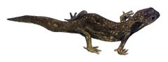
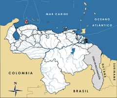

Lepidoblepharis montecanoensis
| Tuqueque de Monte Cano | |
|---|---|
|  | |
| Riesgo de extinción | |
 En peligro (UICN) | |
| Clasificación científica | |
| Reino: | Animalia |
| Filo: | Chordata |
| Clase: | Reptilia |
| Orden: | Squamata |
| Familia: | Sphaerodactylidae |
| Género: | Lepidoblepharis |
| Especie: | Lepidoblepharis montecanoensis |
| Nombre binomial | |
|
Lepidoblepharis montecanoensis Markezich et Taphorn, 1994 | |
| Distribución | |
|
 Mapa de distribución de Lepidoblepharis montecanoensis | |
Contenido
Información de Evaluación
- Categoría y Criterio Regional: En Peligro B1ab(iii)+2ab(iii)
- Fecha de Evaluación Regional: 2015
- Evaluadores: Jesús Morales-Campos y Ariany García-Rawlins
- Categoría y Criterio Global: Preocupación Menor
Justificación
Evaluaciones Previas
1999: En Peligro Crítico (CR)
2008: En Peligro Crítico (CR)
Información General
Nombres comunes
Tuqueque de Monte Cano, lagarto de Monte Cano, Monte Cano dwarf gecko, Paraguana ground gecko.
Notas taxonómicas
Sinónimos
Descripción
Es un pequeño lagarto que mide menos de 6 cm de longitud total, uno de los gecos más pequeños del mundo. Presenta un hocico corto, dedos pediales cortos (ocho a diez lamelas bajo el cuarto dedo) y escamas dorsales y laterales ligeramente cónicas. La coloración del cuerpo presenta un patrón marrón pálido con elementos marrones tierra ligeramente contrastantes. El marrón de la cola tiende hacia el rojizo, y en el extremo es pardo anaranjado claro. Los ejemplares juveniles muestran un modelo general más oscuro (Markezich y Taphorn 1994, C. Molina obs. pers.).
Distribución
Lepidoblepharis montecanoensis fue la primera especie endémica de este género señalada en Venezuela. Habita ecosistemas relictos de bosques secos tropicales en la Reserva Biológica de Monte Cano (1800 ha), ubicada al sureste de la península de Paraguaná en el estado Falcón. Esta reserva se localiza 15 km al norte del Cerro Santa Ana, y es la única área protegida de tierras bajas cuya vegetación representa 62% de las especies vegetales del estado Falcón.
- Sistema: Terrestre
- Bioregión:
- Intervalo altitudinal (m): 100-240
- Endémica: Sí
Situación
Es considerado uno de los gecos más pequeños, más amenazados y con menor distribución del mundo. Esta especie endémica de la península de Paraguaná fue descrita en 1994, y solo es conocida por nueve ejemplares, provenientes de la Reserva Biológica de Monte Cano entre 100 y 240 m de altitud (Markezich y Taphorn 1994). Sin embargo, recientemente, personal del Museo de la Estación Biológica de Rancho Grande (EBRG) observaron alrededor de 20 ejemplares (entre 3 y 5 individuos por día) durante 5 días continuos a finales de noviembre de 2013 en la Reserva Biológica de Monte Cano y en la quebrada Chiraguare. De los 20 ejemplares observados, seis fueron recolectados. De estos individuos coleccionados, uno fue un macho adulto y el resto, cinco hembras grávidas (Edward Camargo, datos no publicados). L. montecanoensis ha sido hallada bajo rocas, en la hojarasca y troncos caídos en lecho seco de una quebrada (Markezich y Taphorn 1994, C. Molina obs. pers.). Hasta ahora se pensaba que su área de distribución dentro de la reserva estaba restringida a un relicto de bosque seco, igual o menor a 600 ha (Markezich y Taphorn 1994, obs. pers.). Sin embargo esta nueva información parece indicar que la especie podría ser más común de lo que se sospechaba. Además, lo restringido que es su hábitat, su presencia limitada a una extensión de 2791,93 km2, su ocupación de un área de 104,05 km2, y su baja tasa reproductiva (ya que colocan un huevo a la vez, aunque se desconoce si se reproduce durante todo el año) la hace una especie vulnerable. La aparentemente escasa abundancia poblacional y lo restringido del hábitat (alrededor de 30 ejemplares avistados) sugiere que es una especie que amerita estudios de campo (Markezich y Taphorn 1994, C. Molina obs. pers.). A escala internacional se le clasifica en el nivel de Datos Insuficientes (IUCN 2014).
- EOO (km2): 2791,93
- AOO (km2): 104,05
- Tendencia Poblacional: Estable
Amenazas
El establecimiento de áreas de pastoreo para ganado caprino y bovino representa su principal amenaza (Rodríguez, J. P. y Rojas-Suárez 2003). La intensidad de estas actividades pecuarias ha dejado como consecuencia una drástica reducción y fragmentación de los bosques secos y matorrales espinosos de la región, los cuales se consideran En Peligro (Llamozas et al. 2003, Oliveira-Miranda et al. 2010c). Lo restringido del relicto boscoso en que habita, su baja tasa reproductiva y poca abundancia, agravan su precaria situación. Cualquier evento catastrófico de origen natural o antrópico podría provocar su desaparición total o disminuir su población hasta que su recuperación se haga imposible, dada su baja fecundidad y la asociación de sus eventos reproductivos con la dinámica de lluvias, la cual es algo errática en la región.
Conservación
No se ha desarrollado ninguna medida de preservación para Lepidoblepharis montecanoensis. Su área de distribución se encuentra amparada por la Reserva Biológica de Monte Cano, zona privada creada en el año 1986 y administrada por la Universidad Francisco de Miranda (Unefm). Se requiere evaluar la situación actual de sus poblaciones a fin de diseñar medidas de conservación específicas y establecer una protección real sobre las áreas bajo régimen de administración especial (Abrae) que la protegen. Además, es necesario eliminar el pastoreo caprino y bovino dentro de los límites de la reserva, dado el impacto negativo que este tipo de actividad ejerce sobre la vegetación nativa y consecuentemente sobre la población de la especie.
Autorías
Autores originales
César Molina (†), Fernando J. M. Rojas-Runjaic, Edward Camargo y Gilson A. Rivas
Colaboradores
Ilustrador
Desconocido
Referencias
- IUCN (2014). The IUCN Red List of Threatened Species. Version 2014.3. Accesible en www.iucnredlist.org.
- Llamozas, S., Duno de Stefano, R., Meier, W., Riina, R., Stauffer, F., Aymard, G., Huber, O. y Ortiz, R. (2003). Libro Rojo de la Flora Venezolana. Provita:, Fundación Polar, Fundación Instituto Botánica de Venezuela Dr. Tobias Lasser. Caracas, Venezuela. 555 pp.
- Markezich, A. L. y Taphorn, D. C. (1994). A new Lepidoblepharis (Squamata: Gekkonidae) from the Paraguana Peninsula, Venezuela, with comments on its conservation status. Herpetologica 50: 7-14.
- Molina, C., Rojas-Runjaic, F. J. M., Camargo, E. y Rivas, G. A. (2015). Tuqueque de Monte Cano, Lepidoblepharis montecanoensis. En: J.P. Rodríguez, A. García-Rawlins y F. Rojas-Suárez (eds.) Libro Rojo de la Fauna Venezolana. Cuarta edición. Provita y Fundación Empresas Polar, Caracas, Venezuela. Recuperado de: animalesamenazados.provita.org.ve/content/tuqueque-de-monte-cano
- Oliveira-Miranda, M. A., Huber, O., Rodríguez, J. P., Rojas-Suárez, F., De Oliveira-Miranda, R., Zambrano-Martínez, S. y Giraldo Hernández, D. (2010c). Riesgo de eliminación de los ecosistemas terrestres de Venezuela. Páginas: 109-235. En: Rodríguez, J. P., Rojas-Suárez, F. y Giraldo Hernández, D. (Eds.). Libro Rojo de los Ecosistemas Terrestres de Venezuela. Provita, Shell Venezuela y Lenovo (Venezuela). Caracas, Venezuela.
- Rodríguez, J. P. y Rojas-Suárez, F. (1999). Libro Rojo de la Fauna Venezolana, segunda edición. PROVITA, Fundación Polar. Caracas. 444 pp.
- Rodríguez, J. P. y Rojas-Suárez, F. (2003). Libro Rojo de la Fauna Venezolana (2a ed. reim.). Provita, Fundación Polar. Caracas. 472 pp.
- Rodríguez, J. P. y Rojas-Suárez, F. (Eds.) (2008). Libro Rojo de la Fauna Venezolana, tercera edición. Provita y Shell Venezuela, S. A. Caracas, Venezuela. 364 pp.